セキサイが走って出会った､城跡やまちなみ､サイクリングロード､神社･大木などの見どころを､エリアをまたいでご紹介します｡
大正ロマンの街並みとソフトクリームが待つ､高原のまち｡
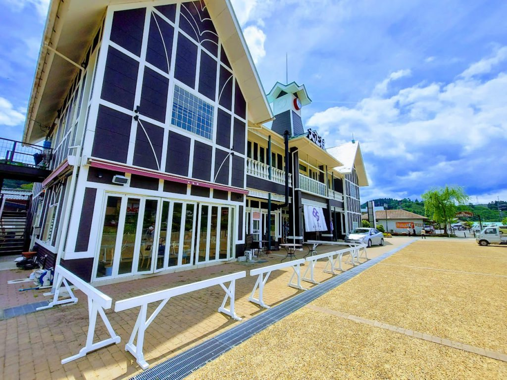
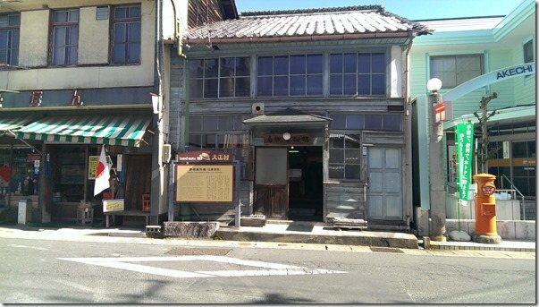
恵那市明智町は､まち全体が｢大正村｣として親しまれています｡昔ながらの商店街に大正風の建物が点在し､のんびりした空気が流れています｡街なかには明智城跡(白鷹城)もあり､歴史さんぽも楽しめます｡
2021年5月のライドでは､関から八百津､日吉､小里を経由して片道約68kmで到着しました｡小里から先は上りが続く走りごたえのあるコースで､着いた先は標高が高く涼しい高原のまちです｡サイクリストの姿も多く､県内の軽井沢のような雰囲気です｡
立ち寄りどころは､五平餅と､お店の方が笑顔で手渡してくれたイチゴソフトクリームです｡町のお寿司屋さんでいただいたちらし寿司とそばのセットも､補給にぴったりでした｡精肉店のコロッケや豆腐店のおみやげなど､まちの人の優しさにふれられるお店もそろっています｡
巨大な岩盤にそびえる石垣と､恵那山まで見渡す絶景の山城跡｡
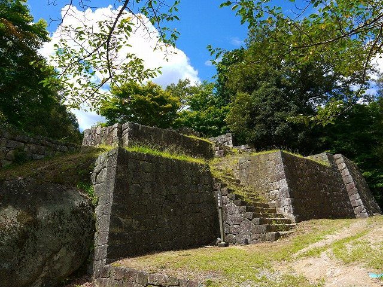
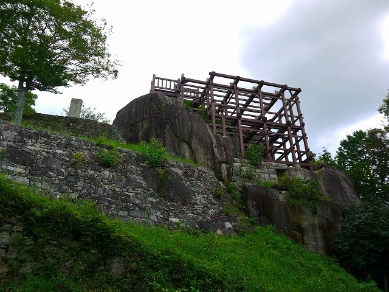
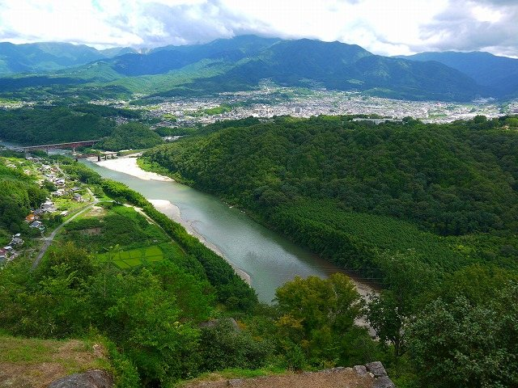
中津川市の苗木城跡は､巨大な岩盤の上に築かれた､苗木藩1万石の山城跡です｡建物は残っていませんが､見事な石垣が続き､ブログでは｢日本版マチュピチュ｣と呼びたくなる景色として紹介されています｡
城跡に入ってから､約15分で頂上に着きます｡大矢倉と呼ばれる石垣､馬洗い岩､千日井戸など､見どころが次々に現れます｡下の資料館には､苗木藩が約360人の武士で構成されていたという展示もあり､当時の暮らしを想像するのも楽しい山城です｡
天守台からは中津川の町並みと木曽川の流れ､雲をかぶった恵那山までが見渡せ､風が吹き抜ける気持ちのよい場所です｡サイクリングでは､根の上高原の展望台から苗木城を望めたという記録もあり､東濃ライドの目印としても楽しめます｡
新緑の湖畔を一周できる､家族で楽しめる絶景サイクリング｡
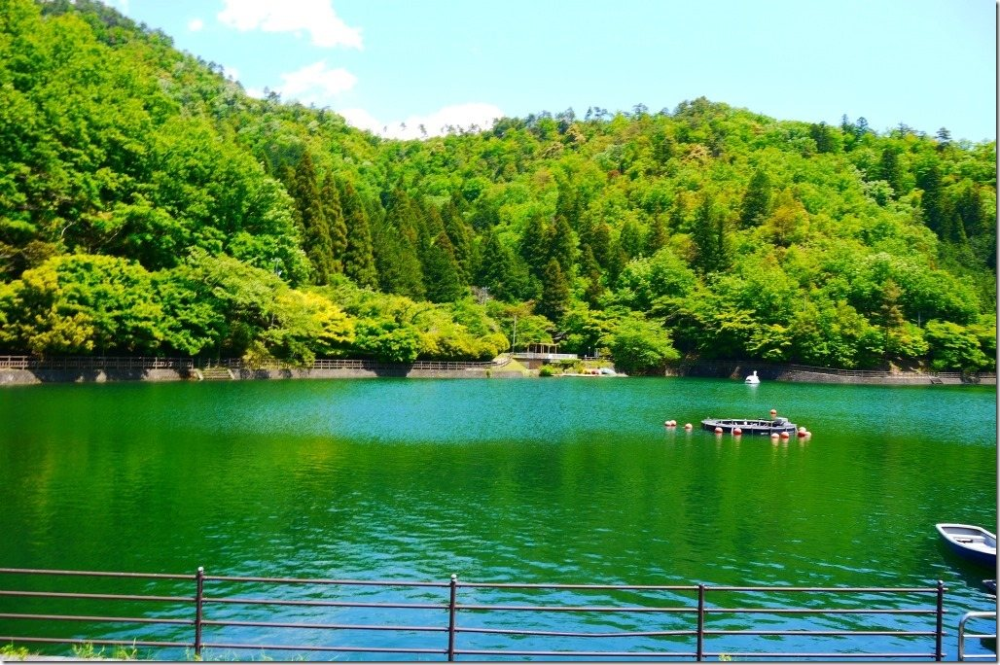
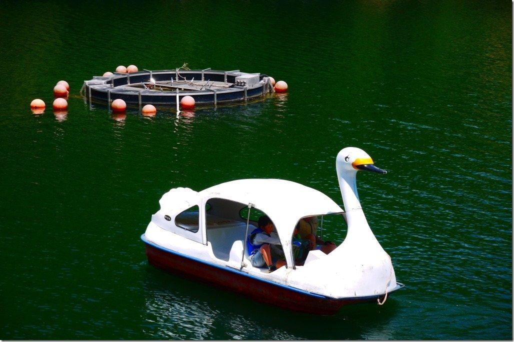
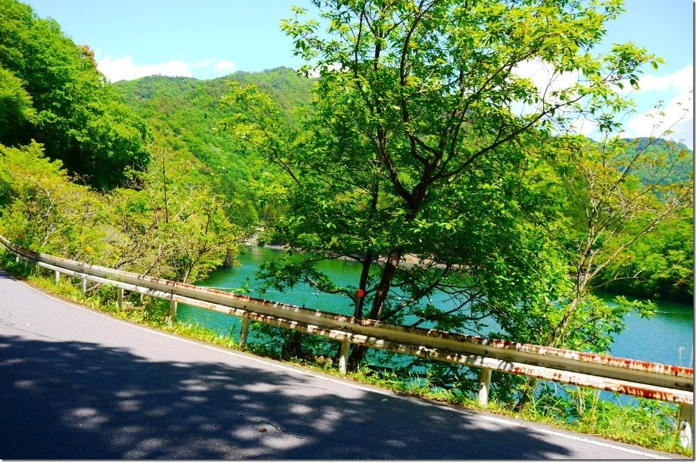
山県市の伊自良湖は､関から片道30〜35km前後で行ける人気のサイクリング先です｡往復約70kmの､ほどよいライドが楽しめます｡山県市は平地が多く､心地よい風を受けながら走り出せます｡
ゆるやかな丘を越えて頂上に着くと､湖の絶景が広がります｡湖畔は一周でき､スワンボートが浮かぶ｢恋人の聖地｣としても親しまれています｡湖荘のメニューの｢ピンクラーメン｣も話題で､次は試してみたいと紹介されていました｡
立ち寄りどころは､てんこもり農産物直売所のモーニングです｡帰りは平井坂を越えて武芸川へ向かい､道の駅で美濃末広堂のアイスモナカを楽しむコースでした｡2017年のセキサイライドでは､伊自良湖の坂を休憩ポイントにして､ハーブレンドの山県元気玉バーガーまで足を延ばしています｡
木曽川沿いを走って出会える､国宝の天守と城下町｡
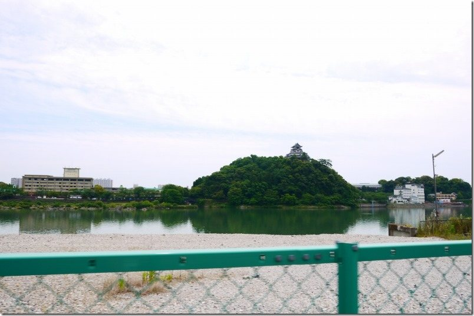
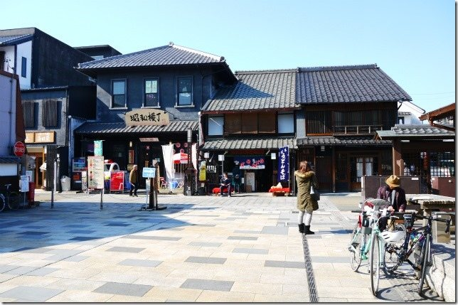
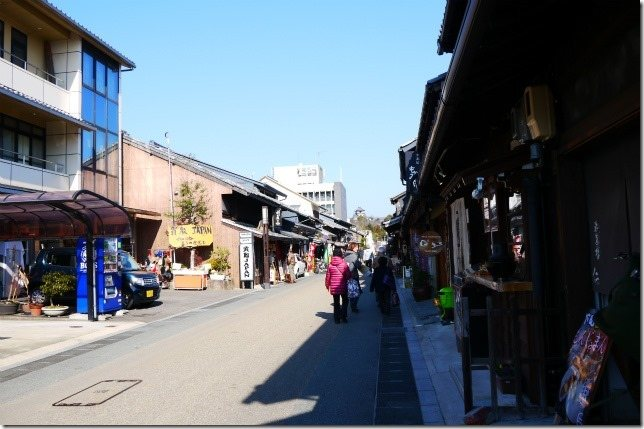
犬山城は､姫路城･松本城･彦根城とならぶ国宝四城のひとつです｡関から木曽川に沿って平坦基調のルートで行けるため､ブログでは｢自転車で愛知県まで来た｣という達成感が語られています｡往復約37km､平均時速約15kmのゆったりペースでも訪れられる､初めてのロングライドにもおすすめの距離です｡
途中の坂祝でモーニングをいただき､木曽川畔のサイクリングロードを走って犬山橋へ｡鵜沼のあたりからは､木曽川に浮かぶように見える犬山城と､対岸の鵜沼城跡･伊木山の眺めを楽しめます｡信長の美濃攻略にもゆかりがあり､歴史好きにはたまらない景色です｡
城下町には食べ歩きの店が軒を連ね､昭和横丁やコロッケ､五平餅など､自転車を降りてのんびり散策できます｡木曽川のほとりのカフェでランチをして､帰りは猿喰城を眺めながら関へ戻る､ゆるやかな1日コースがおすすめです｡
美濃守護･土岐氏ゆかりの山城跡で味わう､冒険気分の山歩き｡
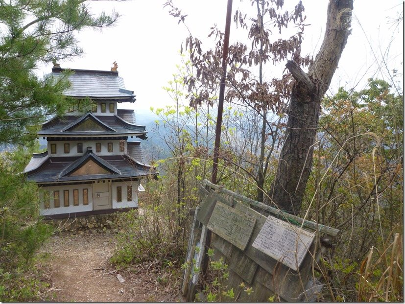
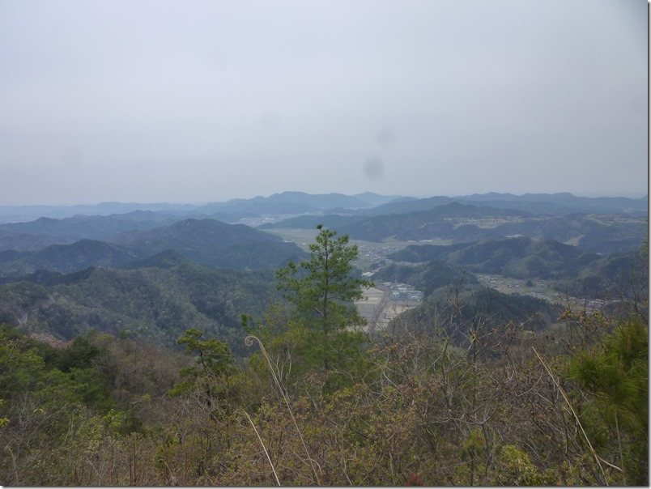
山県市大桑地区の古城山にある大桑城跡は､美濃の守護･土岐氏の拠点だった山城跡です｡谷の入口をふさぐ構えが､越前の一乗谷城や小谷城に似ていると､ブログで紹介されています｡城下町の跡が広がる谷を見下ろす景色は､この山城ならではです｡
2014年4月の訪問は､ちょうど年に一度の城山祭りの日でした｡地元の方からパンやジュースをふるまっていただき､樹木の名前や案内看板も整っていて､地元の方に大切にされている山城です｡千畳敷､天守跡､展望台と､登った先に見どころが続きます｡
自転車では､山県市の峠｢はじかみ林道｣が走りがいのあるコースとして何度も登場します｡サイクリストの姿も多く見かけます｡ライドのついでに古城山のふもとに立ち寄って､土岐氏の歴史に思いをはせるのもおすすめです｡
二つの川に守られた､関市富之保の天然の要害を歩く｡
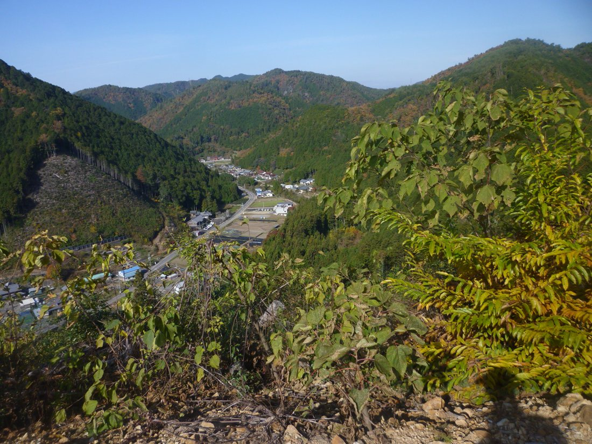
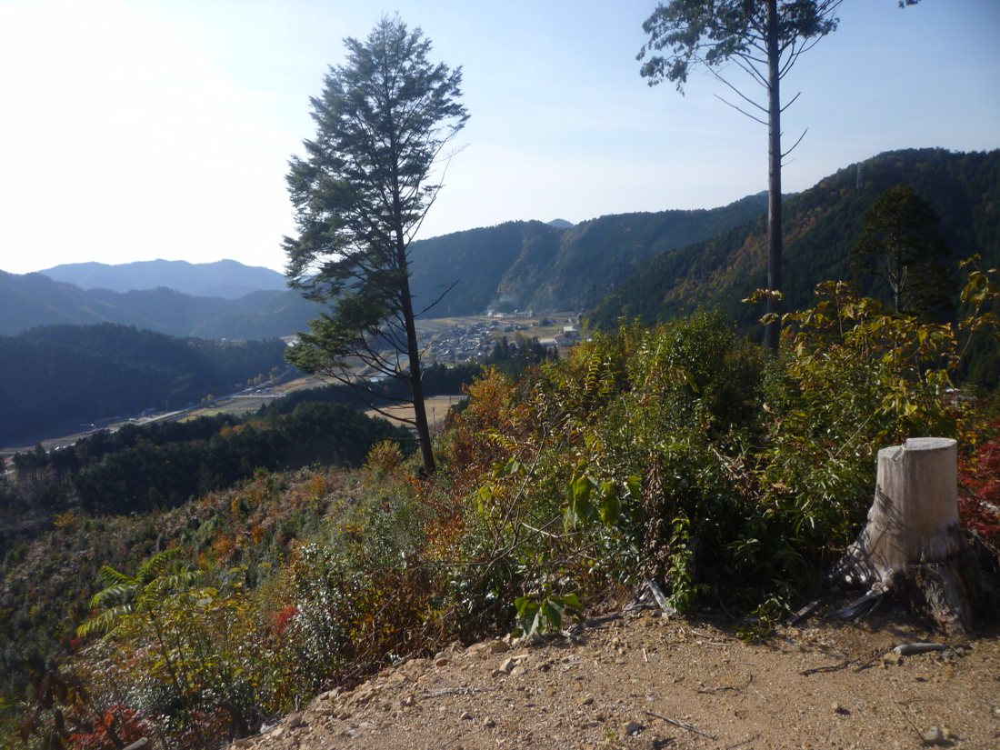
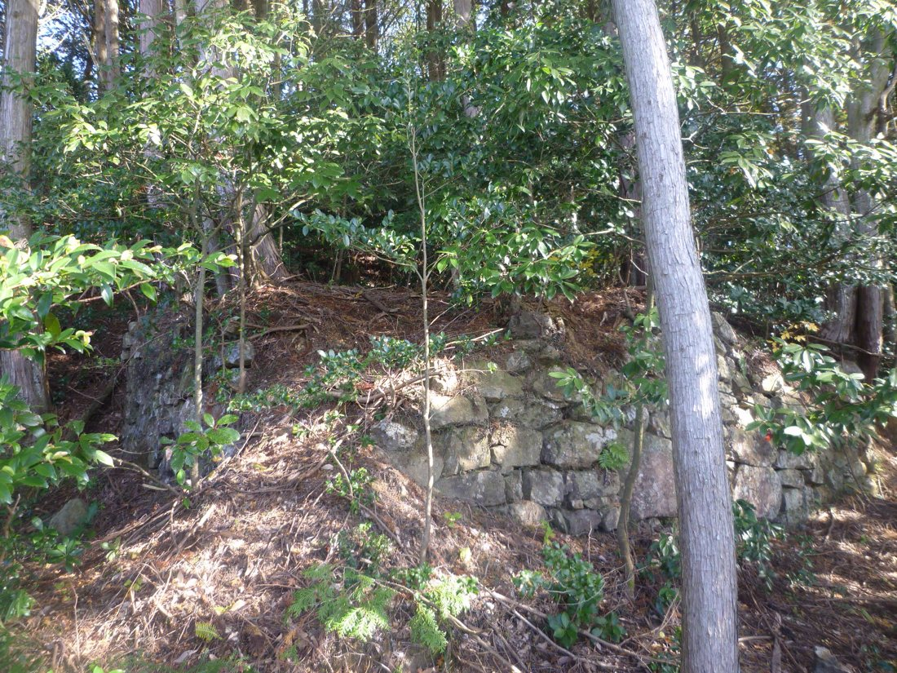
関市富之保にある一柳城(別名･大洞城)跡は､津保川と武儀倉川にはさまれた小高い山全体を城としていたと考えられる山城跡です｡城主は､織田信長や豊臣秀吉に仕えた一柳直末公と紹介されています｡郡上方面への押さえとして､重要な場所だったようです｡
本丸付近からは､北の郡上方面や西の津保川流域まで見渡せ､山全体が砦だったことが実感できます｡頂上には石垣跡や曲輪跡､小さな祠があり､見ごたえのある遺構が残ります｡水無神社方面の林道を使うと､比較的歩きやすくなっています｡
津保川沿いはセキサイクルツーリングの舞台で､コースは一柳城下を通り､武儀倉､雁曽礼へと続きます｡ブログでも､古城探索は奥深い趣があるので､ぜひ富之保一柳地区に遊びに来てほしいと呼びかけられています｡
金華山の頂にそびえる､岐阜のシンボルと紅葉の絶景｡
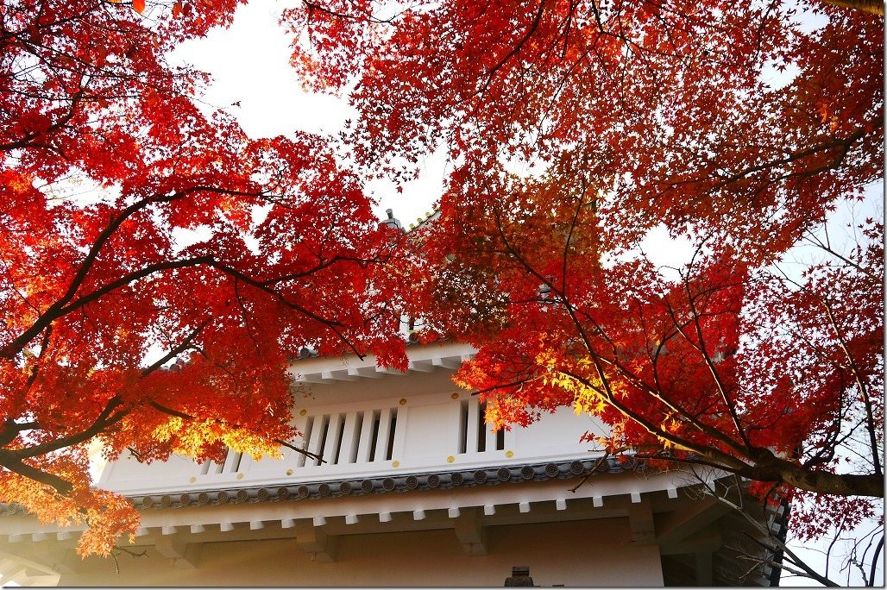
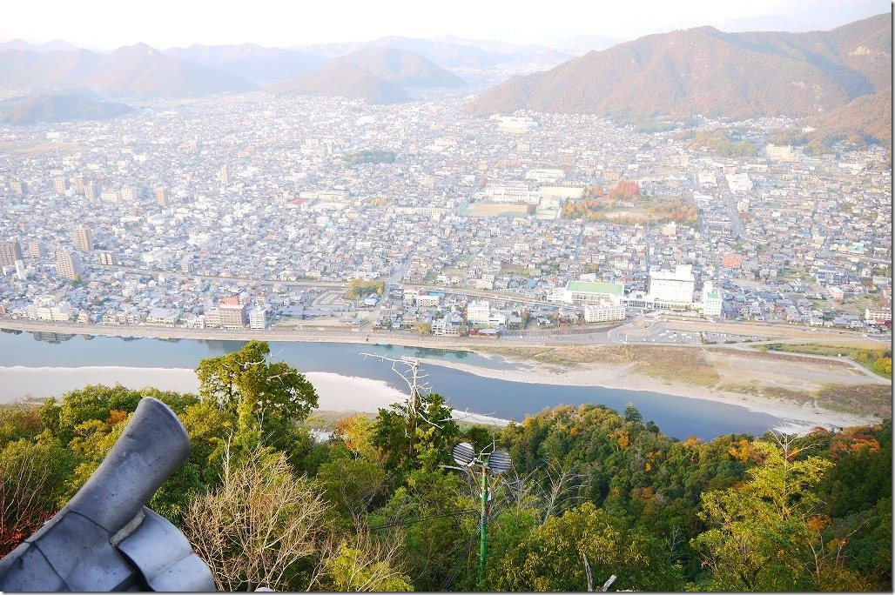
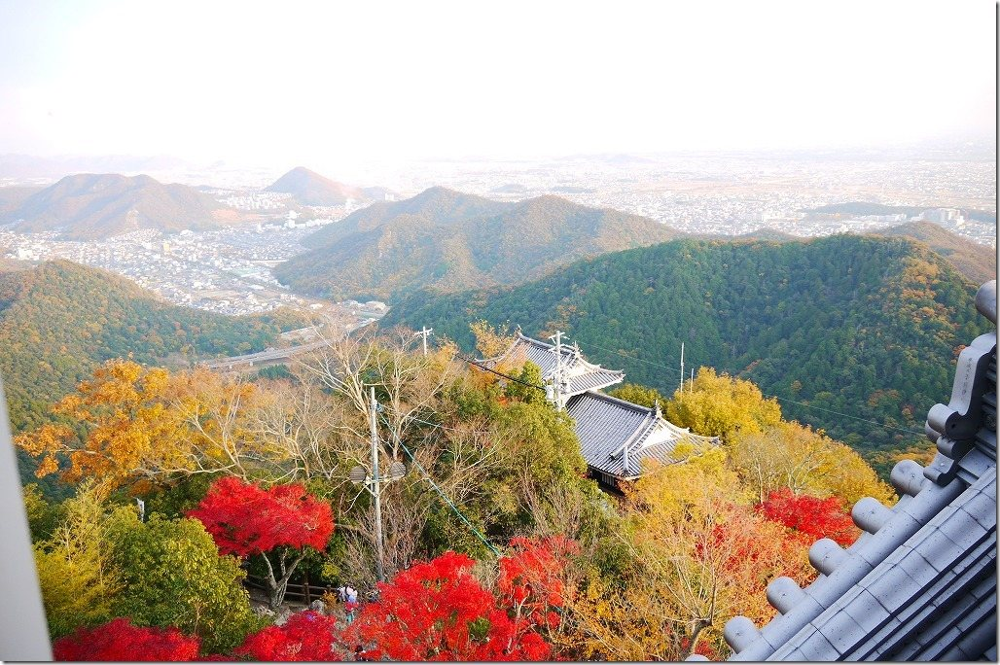
金華山(稲葉山)の山頂にそびえる岐阜城は､岐阜市民のハイキングコースとして親しまれています｡ロープウェイでも､麓から歩いても登れ､登り方によって違った楽しみ方ができます｡信長や竹中半兵衛の物語も思い浮かべながら､歴史を感じられる場所です｡
｢めい想の小径｣から登ると､約80分で頂上に着きます｡石畳の道を進み､ビューポイントからは伊吹山や養老山脈､山頂からは長良川と岐阜市街地を見渡せます｡紅葉と夕日で染まる景色が､登ったご褒美です｡
自転車では､金華山ドライブウェイがヒルクライムの定番です｡2018年10月には､岩戸公園側と岐阜公園側からのぼって20kmで獲得標高600mを走り､七曲りコースの分岐から徒歩で山頂へ向かいました｡池田山からの帰りに､城下の河原町･鵜飼乗り場でかき氷を楽しむ寄り道も紹介されています｡
｢難攻不落｣と呼ばれた山城と､街道の風情が残る富加のまち｡
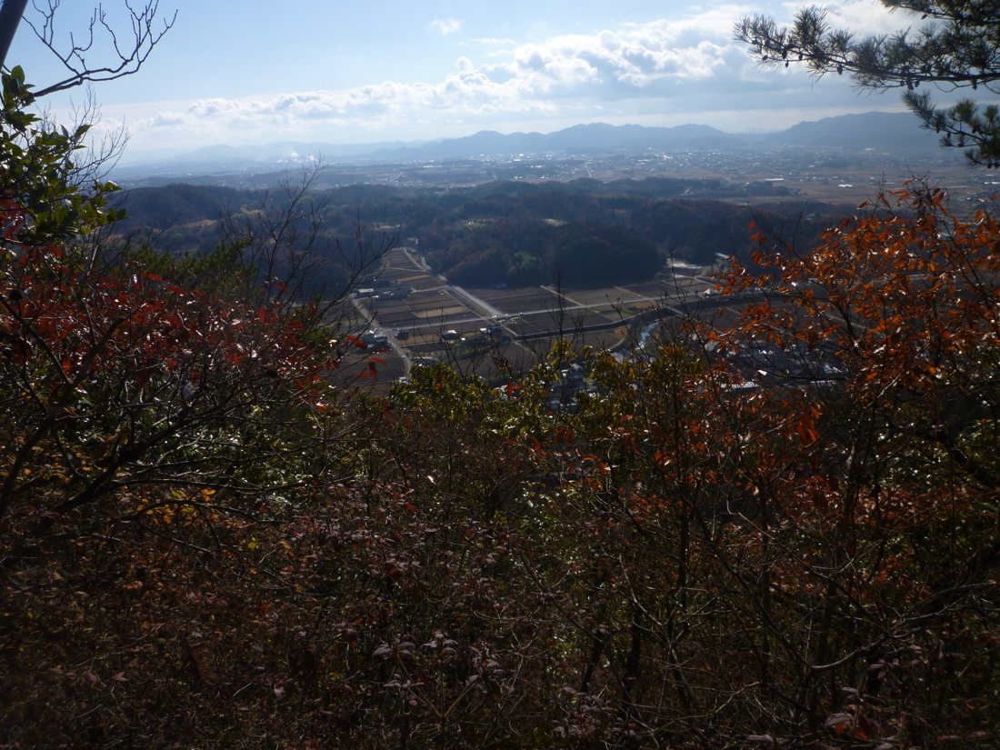
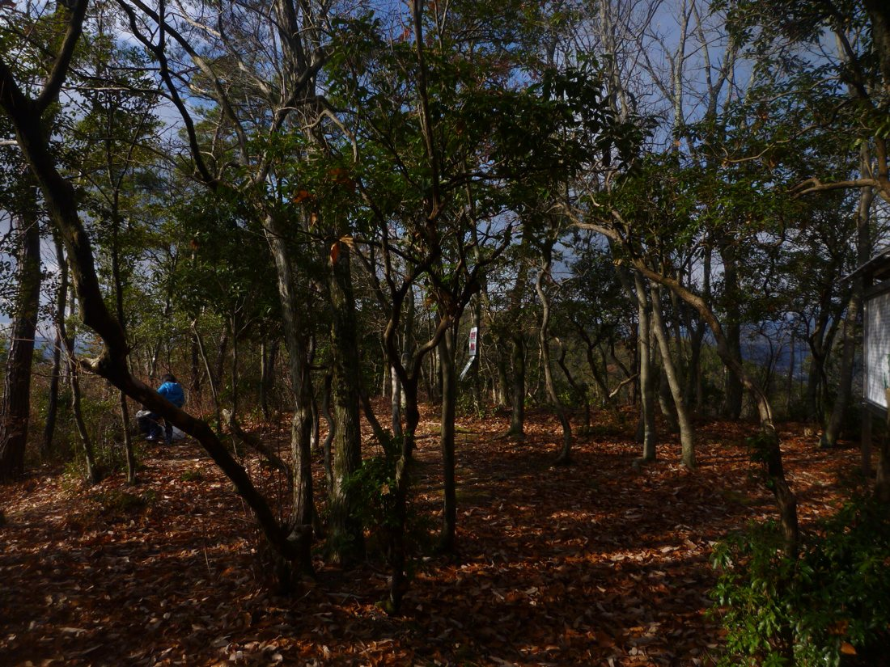
富加町の加治田城跡は､標高271m､麓からの高さ約170mの山城跡です｡一度も敗れたことがないため｢却敵城｣と呼ばれたと､地元の方から聞いた話として紹介されています｡織田信長の美濃攻略にもかかわった城で､歴史を感じる山歩きができます｡
2013年12月の探訪では､搦手にあたる清水寺から登りました｡貴重な二天門が残り､加治田の集落は馬籠宿や妻籠宿のような街道の風情が漂い､枡掛跡も見られます｡本丸からは､山あいに名古屋のツインタワーまで見渡せます｡
セキサイのライドでは､加治田のいぶカフェさんでのモーニングが冬のカフェライドの目的地になりました｡富加から神渕へ向かう間見峠への道は､左手に加治田城跡を望める､セキサイのメンバーにも人気のコースです｡
昭和の面影が残る､山あいの小さな街道の町です｡
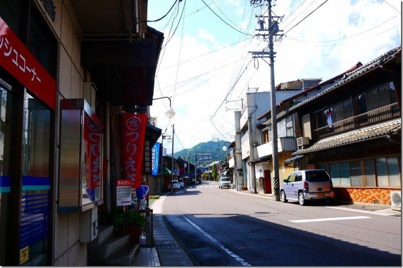
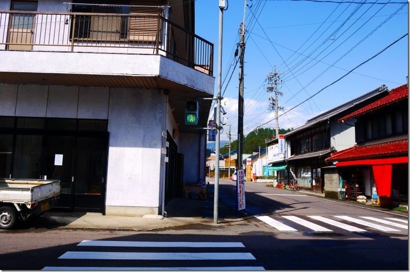
谷合(たにあい)は山県市の旧美山町にある集落で､武儀川沿いの山あいにあります｡交差点を中心に十字路の街道が広がり､家々が道にぴったりと寄り添って並ぶ姿は､ブログでも｢昭和の雰囲気を残す｣と紹介されています｡
雑貨屋さん､食料品店､金物屋さんが並び､かつての暮らしが浮かんでくるようです(2020年訪問時)｡旧美山町役場もあり､かつて栄えた街道の名残を感じながら散策できます｡
関市から武儀川沿いに岩佐の町を抜けて北上すると到着します｡交通量が少なく静かなので､のんびりペダルを回せます｡角のお店でパンや飲み物を補給して､根尾の薄墨桜や冠山峠へ向かう途中の立ち寄りどころにもなっています｡
うだつの上がる旧街道の町並みを､自転車でゆったり巡れます｡
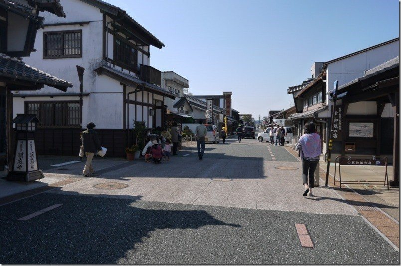
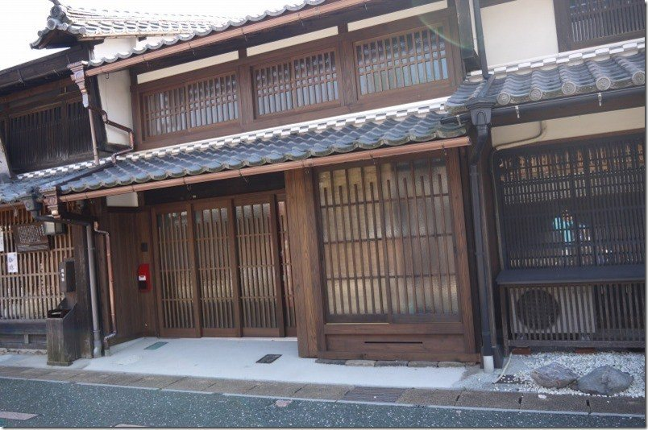
美濃のまちなみは､旧街道の風情を今に伝える美濃市の町並みです｡ブログでは､建物の両脇の防火壁である｢うだつ｣が立派に上がっている様子や､魚屋町筋などの通りを歩いた様子が紹介されています｡町なかにはガイドしてくれる案内看板が多く､ふらりと歩くだけでも楽しめます｡
関市の自宅から自転車で約17kmで着き､関と美濃の間は歩道が整っていてサイクリングが楽しいと書かれています｡町の周辺にはパン屋さん､ソフトクリーム､カレー屋さんなど立ち寄りたいお店がそろい､補給にもぴったりです｡
足を伸ばして小倉公園へ上れば､町を一望できます｡旧名鉄美濃駅や長良川鉄道の美濃市駅もあり､観光資源が豊富でちょっと寄るのにちょうどよい町だと紹介されています｡郡上八幡へのライドの途中や､帰り道に立ち寄る定番スポットにもなっています｡
長良川と金華山に抱かれた､風情あふれる岐阜の城下町です｡
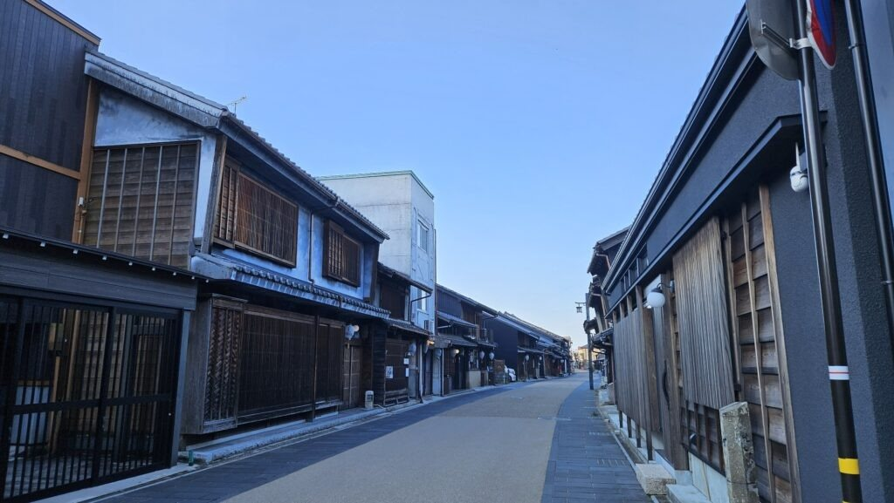
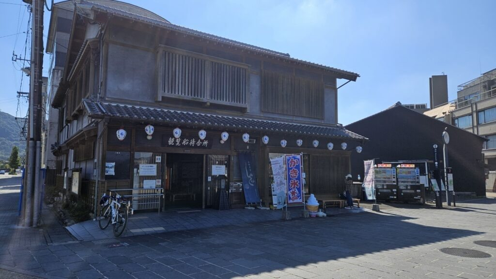
河原町(川原町)は､岐阜城のふもとに広がる岐阜の城下町です｡町家が並ぶ界隈は大変風情があり､ここ数年でかなり形を変えて､とてもよい雰囲気になっています｡
鵜飼乗り場のすぐそばで､長良川の旅館群と背景の金華山岐阜城がそろう絶好のスポットです｡人通りの少ない朝の時間は､ゆっくり町並みを楽しめて､コーヒーで一息つくのにもぴったりです｡
関市から岐阜へ向かうサイクリングの立ち寄り先として､2024年には池田山へのライド(往復110km)の行き帰りに訪れています｡鵜飼乗り場のデザートショップで､名古屋名物ういろう入りの珍しいかき氷｢和氷｣を味わうのもおすすめです｡
飛騨の古い町並みへ､自分の脚でたどり着く喜びがあります｡
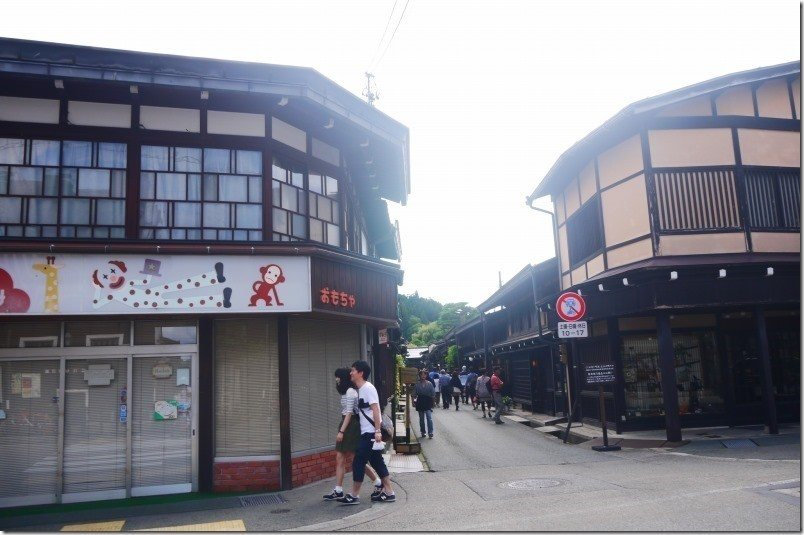
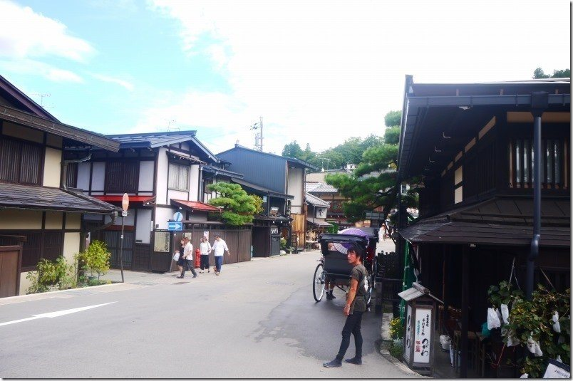
高山の魅力は､なんといっても古い町並みです｡ブログでは､上三之町をメインストリートに､間口が狭く奥行きの深い町家が並ぶ様子や､みたらし団子､コロッケ､メンチカツなどの食べ歩きが楽しいと紹介されています｡人力車も走り､新旧のお店が混在するバラエティ豊かな町です｡
2016年には､関の自宅を朝6時に出発し､郡上八幡からせせらぎ街道と西ウレ峠を越えて､自転車で高山市街へ到着しています｡約6時間､この時点で110kmの道のりで､到着したときの達成感はひとしおです｡途中のパスカル清見のソフトクリームや明宝フランクも､ライドの楽しみになっています｡
市街では､外国からの観光客も多く､にぎわいのなかで飛騨の雰囲気をたっぷり味わえます｡自転車なら町なかの機動力は抜群で､駅前から三の町付近へすぐに足を運べます｡
細い小路が入り組む､飛騨の玄関口の町歩きが楽しめます｡
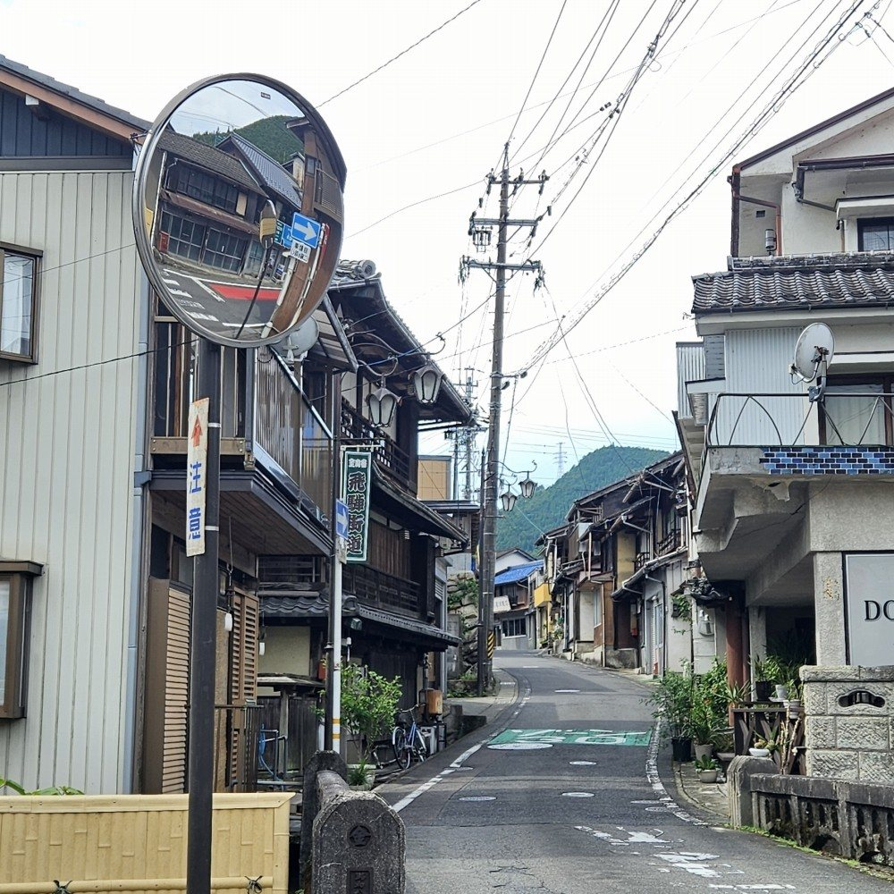
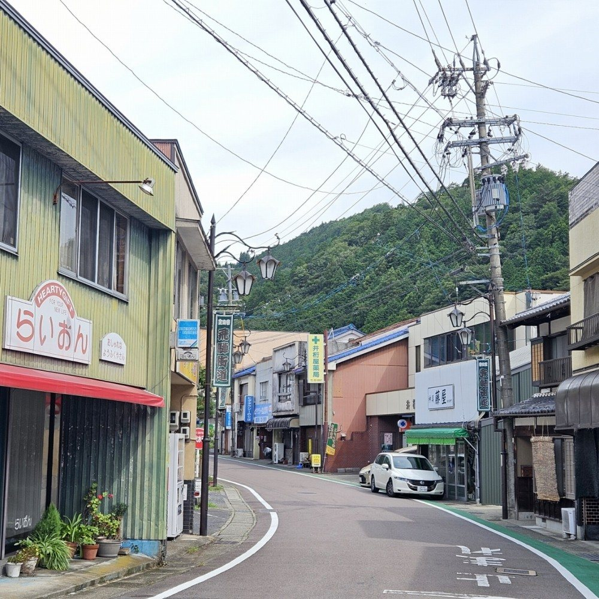
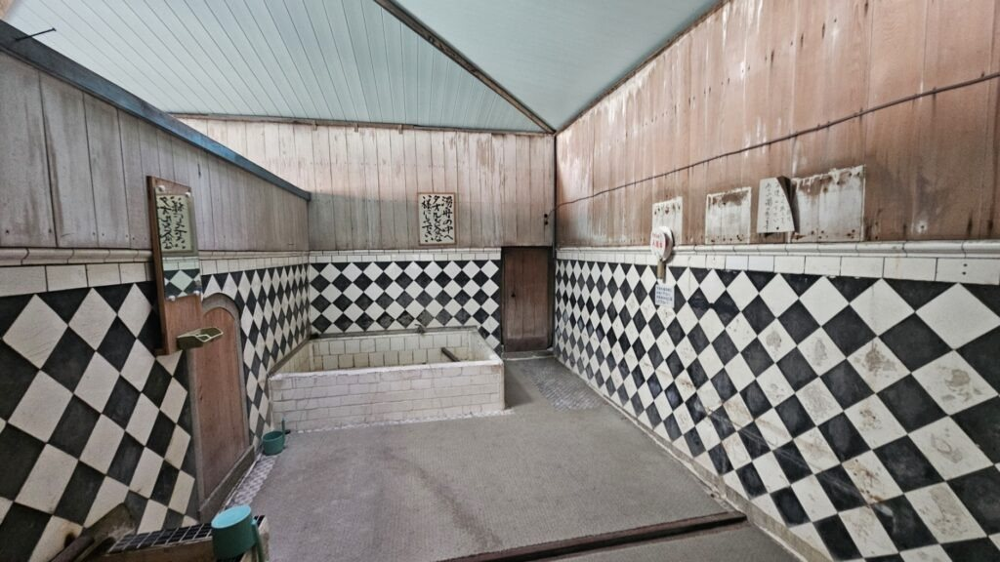
下呂市金山町は､飛騨川と馬瀬川の合流点にある飛騨の玄関口です｡狭い谷間に家々がびっしりと並び､うねるような小道が多数あることから､ブログでは｢筋骨巡り｣と呼ばれる町歩きが紹介されています｡土地の広い美濃地方ではあまり見られない､谷ならではの風情です｡
飛騨街道沿いには往時の繁栄を今に残す町家が残り､新旧が混在する不思議な魅力があります｡2025年の訪問記では､町の中心部の銭湯跡を見学でき､往時のにぎわいを感じられたと紹介されています｡喫茶店や商店街のお店で､ひと休みも楽しめます｡
関市から間見峠や袋坂峠を越えて､片道約45km､往復約100kmのコースです｡途中の神渕にある松栄堂さんの和菓子など､立ち寄りどころも魅力的です｡峠を越えて飛騨の入口にたどり着く達成感を､ぜひ味わってください｡
標高2700mの畳平へ｡自転車で登る人だけの天空の景色｡
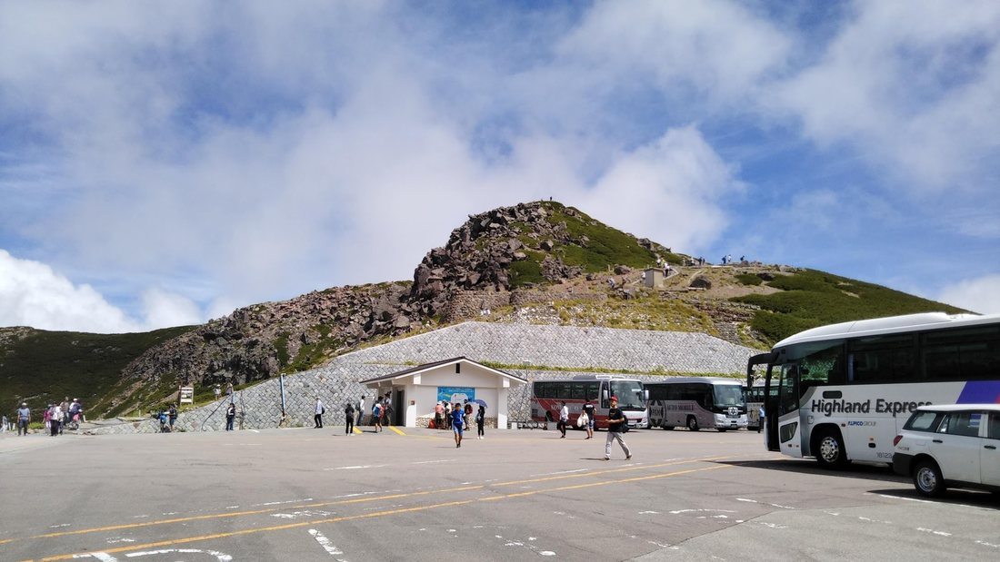
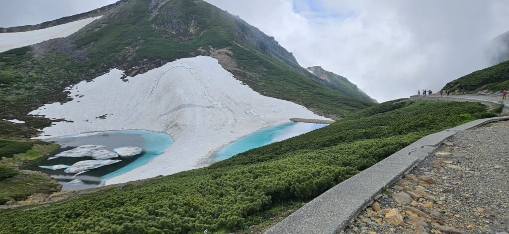
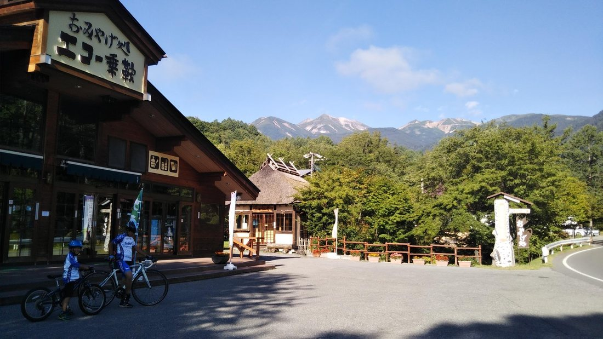
乗鞍は､麓の標高1300～1400mあたりから畳平まで､約17～20kmの山岳道路が続くヒルクライムの聖地です｡マイカー規制があり､通れるのはバスと自転車(とタクシー)だけなので､走ることに集中できます｡岐阜県側の乗鞍スカイラインは距離が短めで走りごたえがあり､長野県側の乗鞍エコーラインは平均勾配6.3%と､じっくり登りたい人向きです｡
標高が上がるにつれて景色は杉やヒノキから松へ､そして森林限界を越えたアルプスの世界へと変わります｡麓より気温が16～18度ほど低く､真夏でも涼しい空気の中を走れます｡高山植物､残雪､碧いカルデラ湖と､自転車で登った人だけが出会える異世界が待っています｡
ゴールの畳平では､バスセンターの山荘でうどんを食べたり､ライダーに人気の頂上ソフトクリームで一息つけます｡さらに剣ヶ峰(標高3026m)までは徒歩で約1時間､花畑を歩いて登山も楽しめます｡下山後は平湯の森で温泉に浸かるのが定番です｡通行の可否や開通時期は季節で変わるため､事前に最新情報をご確認ください｡
雲の上まで続く激坂｡登りきった景色は格別です｡
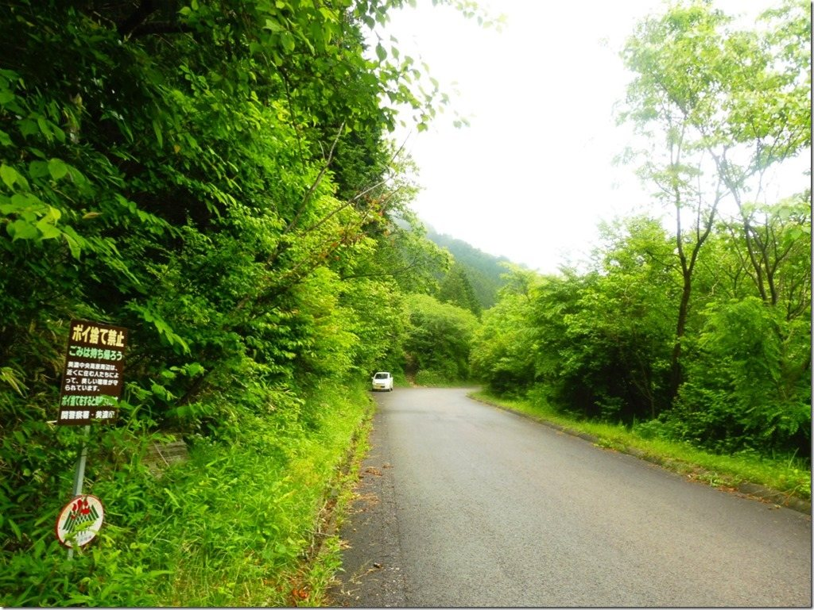
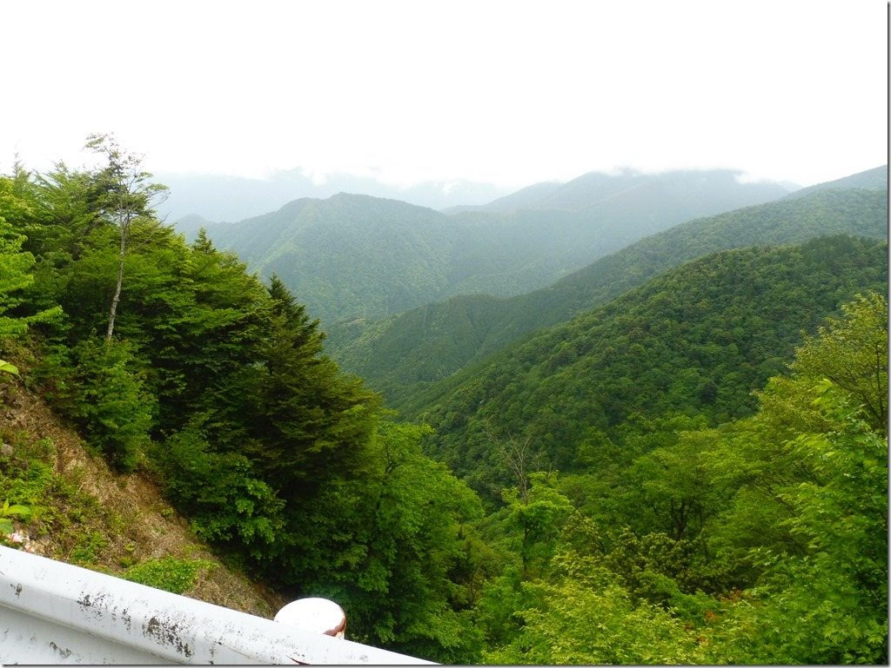
片知渓谷は美濃市にあり､セキサイメンバーが「聖地」と呼ぶヒルクライムコースです｡関からは入口まで約15km､集落や神社の前を通りながら登っていきます｡美濃の自由の女神像の先の橋から郡上の看板がある三叉路広場までの約12.2km､獲得標高760m､平均勾配6%というコースで､途中には最大20%を超える激坂区間もあり､走りごたえは抜群です｡
面白いのは､坂が最初に厳しく､後半がゆるくなる珍しい構成です｡序盤の激坂を越えたつづら折りは､平坦に感じるほど楽に思えるとのこと､コース全体で登りの達成感が味わえます｡さらに登ると視界が開け､雲の上に出て山々を見渡せる絶景が待っています｡
朝練やタイムトライアルで走るメンバーも多く､ヒルクライムの腕試しにぴったりです｡走る時は補給と防寒の準備をして､天気の良い日を選ぶと景色をより楽しめます｡
木曽川沿いを走って国宝･犬山城へ｡平坦基調で気持ちいい｡
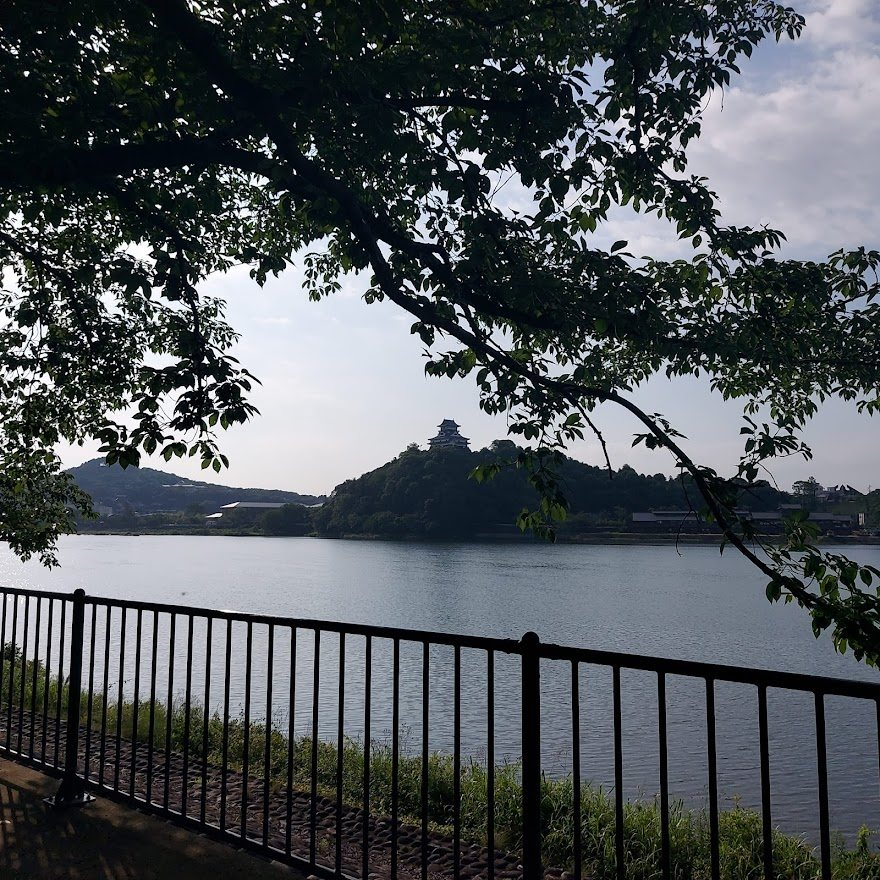
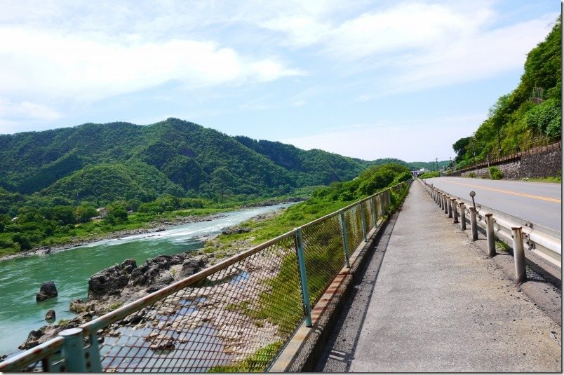
関市から木曽川沿いに南下して､国宝･犬山城を目指すのが人気のコースです｡ブログでは､木曽川沿いの一部を除けば自動車の往来が少なく､平坦基調で走りやすいと紹介されています｡初心者の方でも走りやすく､愛知県まで自転車で行けるというわくわく感も魅力です｡
走りながら見える木曽川は水量が豊かで､両側に連なる山並みとともに雄大な景色です｡湖面に映る犬山城は絶景で､朝の木曽サイクリングロードは歩行者､ランナー､サイクリストが思い思いに楽しむにぎやかな場所です｡
立ち寄りどころは､関市内から約9kmの坂祝町にある喫茶店のモーニングです｡名古屋パンのたっぷりバターは補給にぴったりです｡さらに犬山から先へ進むと背割堤を経て木曽三川公園センターに着き､かき氷で一息つくこともできます｡
信号が少なく景色は最高｡長良川を遡って郡上八幡へ｡
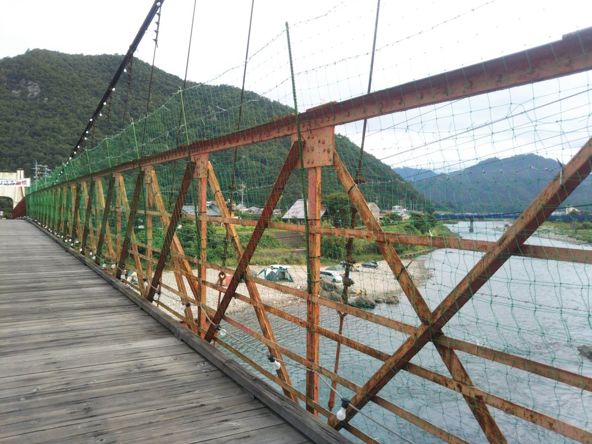
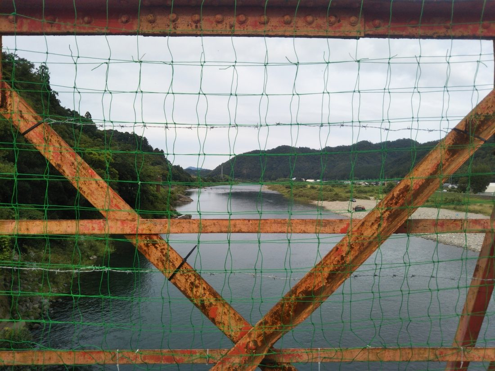
関から長良川沿いを北上して郡上八幡へ向かうコースは､サイクリストに人気のルートです｡美濃橋からは､国道の対岸にサイクリングロードのような道が続き､信号が少なく長良川の絶景を楽しめます｡遠方から来たサイクリストにも､評判のコースです｡
美濃までは平坦コースで､巡航速度25kmほどで気持ちよく走れます｡美並から郡上までは緩やかな登りが続きますが､ほどよい走りごたえです｡エイドにちょうどいいみなみ子宝の湯などを挟みながら､景色と一緒に進めます｡
ゴールの郡上八幡は､城下町の街並みや郡上八幡城の散策が楽しめます｡帰りは長良川鉄道のサイクリング列車を使う方法もあり､自転車を載せたまま気軽に行けると高評価です｡
立ち寄れるコース: 長良川サイクリング
名前もすてきな街道｡仲間と気持ちよく走れます｡
美濃加茂ロマンチック街道は､ブログでは2018年秋の東濃ライドの終盤に登場します｡中山道を通って御嵩から続く平坦基調の道を進み､この街道では仲間と力を合わせて走り抜けたと紹介されています｡
その先は富加へ向かい､関へ戻るルートです｡チームで走る楽しさを実感できるコースの一部として紹介されています｡
稲葉山から岐阜の街を一望｡短くても走りごたえ十分｡
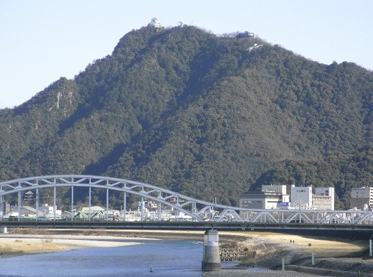
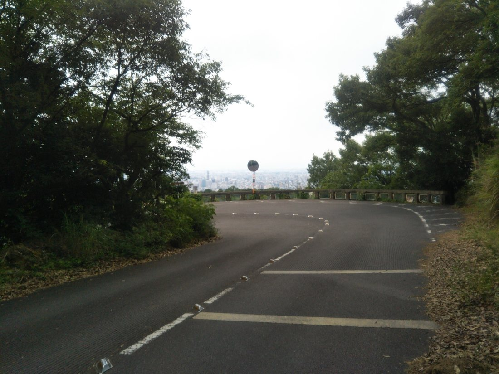
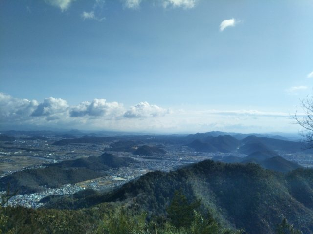
金華山ドライブウェイは､岐阜城のある金華山(稲葉山)を登る道で､岐阜のヒルクライマーの定番練習コースです｡岐阜公園側の入口から頂上までは約2.4km､獲得標高149mで､速い人は約8分で駆け上がります｡出だしにしっかりした勾配がありますが､その分短い距離で走りごたえが味わえます｡
岩戸公園側と岐阜公園側の両方から登れるので､往復して何本も走る人もいます｡朝は自転車の仲間やウォーキング､ランニングの方でにぎわい､すれ違いざまに声をかけ合う楽しさもあります｡
山頂からは濃尾平野を一望でき､晴れた日には伊吹山､御嶽山､乗鞍岳､名古屋のビル群まで見えるとのことです｡自転車を置いて､七曲りコースを歩いて岐阜城へ向かう楽しみ方もあります｡季節による通行規制もありますので､事前に最新情報をご確認ください｡
車が入れない約10kmの堤防道｡平坦好きの聖地です｡
背割堤は､岐阜のサイクリストなら一度は耳にする平坦好きの聖地です｡自動車が入れない堤防道が約10km続き､信号や車を気にせず気持ちよくペダルを回せます｡ストラバのKOMを狙って走る人も多く､岐阜の平坦番長を目指す挑戦の場にもなっています｡
岐阜から木曽川沿いを走ると､一宮タワーの麓から堤防沿いを進み背割堤に入ります｡岐阜から木曽三川公園までは約40km､1時間ちょっとで着くとブログで紹介されています｡
着いた先の木曽三川公園センターでは､かき氷で一息つけます｡周りにはおしゃれなコンビニもあり､補給や休憩に困りません｡桑名のハマグリライドのコースとしても登場し､長良川の河口へ続く道としても楽しめます｡
串かつとお参りで元気をもらう､ゆるポタの人気スポット
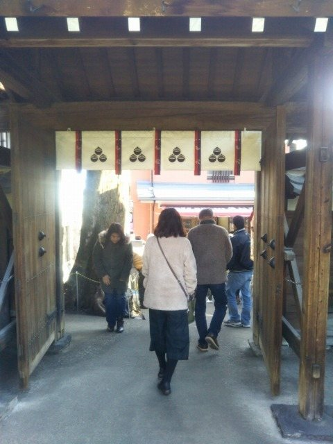
おちょぼさんの愛称で親しまれる千代保稲荷神社は､海津市にあります｡せきサイでは2018年1月に仲間と岐阜の鵜飼乗り場に集合して､ゆるやかなペースで向かうおちょぼさんライドを楽しみました｡ブログには､冬晴れの空に伊吹山が白く輝いて見えたと書かれています｡
参道は東海地方随一の稲荷神社らしく､商売繁盛を願う人たちで大にぎわいです｡お供えの油揚げとろうそくを買ってお参りし､お土産屋さんをのぞいたり､大鳥居の前で記念撮影をしたりと､歩いて回るだけでも楽しめます｡
お楽しみは参道の食べ歩きです｡串かつの名店では､お店の裏口にサイクルラックがあり､自転車を掛けてゆっくり食事ができます｡2018年訪問時はドテ丼や串かつをいただき､デザートには関でいう満月焼きの白あんを味わいました｡走ったあとのごほうびが盛りだくさんです｡
3県の境でひと休み｡木曽サイからつながる憩いの公園
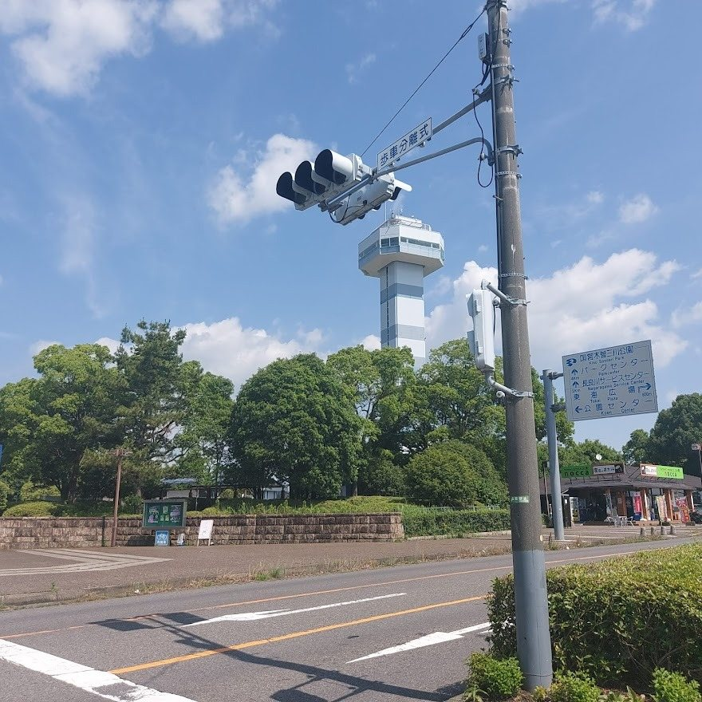
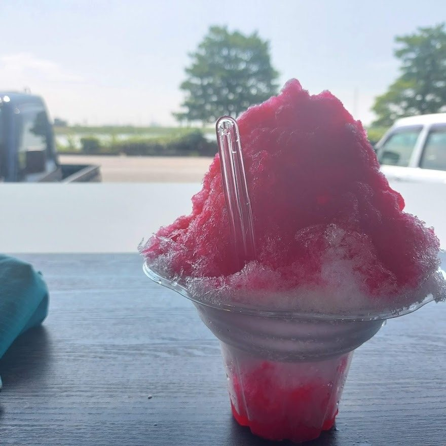
木曽三川公園は､岐阜・愛知・三重の県境に広がる公園です｡せきサイのブログでは､岐阜の鵜飼乗り場から木曽三川公園までを約40km､1時間ちょっとで走り抜けたと紹介されています｡気持ちよく走れる堤防道路の先にあるごほうびスポットです｡
芝生に寝転びながら､木漏れ日と流れる雲をながめるひとときも過ごせます｡遊具もたくさんあって､にぎやかな公園です｡
2022年の夏には､四日市のまぐろレストランへ向かう途中の補給ポイントとして立ち寄りました｡関から片道約60kmの地点で､名物のタワーを見上げながらかき氷で一息つきます｡ここまで来れば､いよいよ三重県です｡
片道88kmを走った先の､最高のごほうび海鮮丼
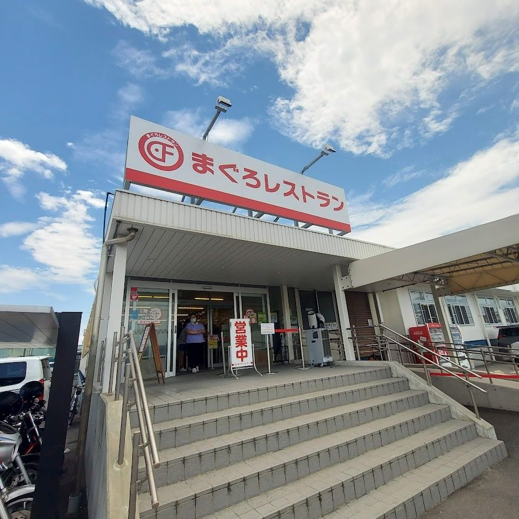
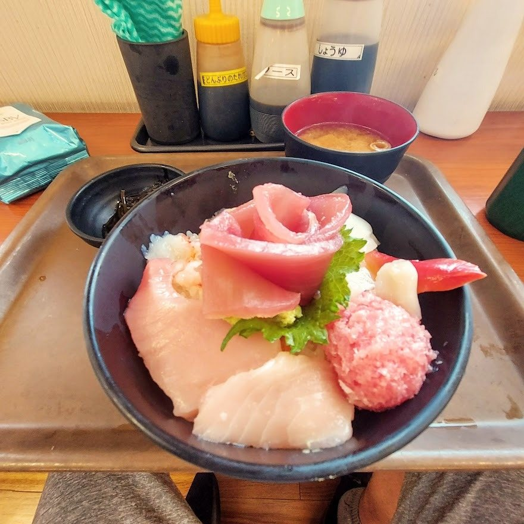
三重県四日市市のまぐろレストランは､せきサイのメンバーにも人気のごほうびスポットです｡2022年の夏､セキサイのメンバーが関から自転車で目指しました｡木曽サイクリングロードや背割堤､木曽三川公園を経由して､片道は約88km､家を出てから5時間かけてのゴールです｡
お店はとても大きな食堂で､お昼前から多くのお客さんでにぎわいます｡2022年訪問時に選んだのは税込1,000円の海鮮丼で､大きなマグロやハマチ､ホッキ貝がのり､ほんのり甘いご飯と一緒にいただきました｡ブログでは､過去に食べた中でも本当においしい海鮮丼と絶賛されています｡
窓の外にはヒモノ食堂も見え､店内には冷凍の魚介類がずらりと並ぶ売り場もあります｡走りごたえのある距離だからこそ､食べたときの感動もひとしおです｡
65km走ったら温泉街がお出迎え｡飛騨路の人気スポット
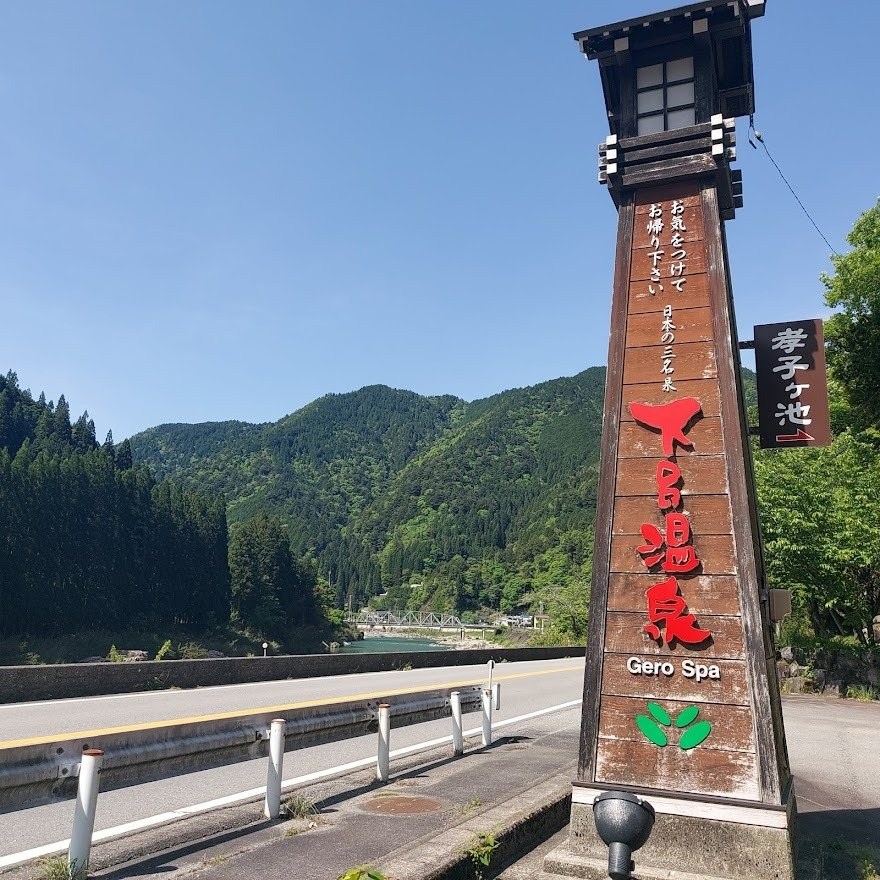
下呂温泉は､関から飛騨路をたどって約65kmの先にある温泉街です｡せきサイのブログでは､2016年のゴールデンウィークや2022年のGWなど､何度も走って訪れています｡2022年は往復136kmのロングライドでした｡
道中は間見峠や袋坂峠を越え､飛騨金山から中山七里の渓谷沿いを進みます｡焼石の町の屏風岩など､雄大な景色が楽しめます｡到着した温泉街は､ゴールデンウィーク最終日で大にぎわいでした｡
下呂といえばケイちゃんなど名物グルメもあります｡2016年には水明館のランチをいただき､9階の展望風呂から下呂の町を一望しました｡2022年は帰りにおおふくやさんのつきみそばをいただき､走ったあとの栄養補給にもぴったりです｡
紅葉の名所へ自走で75km｡着いた先は秋色の渓谷
香嵐渓は､愛知県豊田市足助にある中部地方屈指の紅葉の名所です｡せきサイのブログでは､2017年11月の文化の日に､関から自走で訪れた様子が3回にわたって紹介されています｡片道は66kmの予定でしたが､実際は75kmの旅でした｡
足助の町には京都を思わせる小道が入り組み､陣屋跡や馬頭観音など見どころがたくさんです｡香嵐渓では､赤い橋のそばに土産物店がずらりと並びます｡紅葉が色づき始めたころで､にぎわっていました(2017年)｡
食べ歩きなら五平餅です｡甘いタレの五平餅は､走り疲れた体にしみわたります｡自転車は押して歩けば入れますので､足助の町歩きとあわせて楽しめます｡帰りに寄った森の中のお弁当屋さんで､カツ丼を味わったことも書かれています｡
関から約15km｡紅葉と大杉に出会える山あいの神社
大矢田神社は､美濃市の山あいにあります｡美濃市は大矢田神社を始めとして､紅葉がとても有名です｡関から自転車で往復約30kmと､気軽に訪れられる距離です(2015年11月訪問時)｡
緩やかな上り坂が続く道は､ブログでは時速25〜26kmで一気に駆け上がったと書かれています｡境内には樹齢数百年の大杉がそびえ､田楽やカステラなどの屋台が軒を連ねてにぎやかです｡
急な石段を上った先に本堂があり､朝の9時台から多くの人が紅葉を楽しんでいました｡紅葉のピークは過ぎていましたが､最後の輝きを見せるもみじがとてもきれいでした｡
樹齢数百年の杉に囲まれる､白山信仰の静かな聖域｡
石徹白の里から北へ約2km､大きな鳥居をくぐって社叢に入ると､空気がすっと引き締まります｡美濃地方なら神木になりそうな大杉が社叢を囲み､奥には樹齢1000年を超えるといわれる浄安杉がそびえます｡
関市から石徹白までは片道およそ85〜90km｡郡上白鳥からは標高約1,000mの桧峠を越えますが､登り切った先に広がる高原の里の景色は､走った人へのごほうびです｡集落には補給できるお店が少ないので､白鳥で用意してから向かうと安心です｡
神社へ向かう途中で､ふっと神域に入る感覚があるのも魅力です｡雨の多い白山のふもとが育てた巨木の森で､深呼吸してみてください｡
自転車で登りきった先に､大杉と御嶽山の眺めが待つ神域｡
白川町の北端､標高およそ860mの山頂にある､ブログで｢白川町最強のパワースポット｣と紹介された神社です｡鳥居は標高約790m｡そこから石段をのぼって本殿へ､さらに奥社へと進みます｡
奥社の手前には､生き生きとした樹皮が印象的な大杉がそびえ､展望台からは御嶽山をくっきり望めます｡白山､別山､大日ヶ岳を見渡せる日もあり､のぼった先には絶景と達成感が広がっています｡
サイクリングで訪れるなら､新緑の茶畑や風車､田んぼの水鏡が広がる白川町の道もお楽しみです｡山頂まで続く登りは､自転車で人力でのぼってこそ味わえる充実感があります｡2026年11月の白川一周シライチでも､奥社が最高到達点となるコースの見どころでした｡
立ち寄れるコース: シライチ白川グランフォンド
日吉高原の入口で出迎える､天に伸びる大杉の神社｡
瑞浪を北上して日吉町に入ると､道沿いに神明神社の大杉が目に飛び込んできます｡ブログでは樹齢300年ほどはありそうな大木で､高さは30〜40mほどと紹介されています｡
このあたりは月吉､日吉と地名にもロマンのある里山で､東濃の高原ライドの通り道です｡日吉高原にはサイクリストに親しまれる小さな商店があり､一息つきながら走るのにぴったりです｡
恵那山のふもと､夫婦杉に包まれる涼やかな社叢｡
恵那山をご神体とする歴史ある神社で､ブログでは強いパワースポットとして紹介されています｡走ったのは2026年の真夏｡標高650mの境内は､麓から約200mの登りですが､杉林に入ると日差しが遮られて涼しくなります｡
石段をのぼると正面に夫婦杉があり､周りを樹齢300〜500年ほどの大杉群が囲んでいます｡大杉に触れると炎天下でもひんやりと感じられ､眼下には里の景色も見えました｡手水で体を冷やして石畳でひと休みするのが､おすすめの過ごし方です｡
関市から片道約83kmで､往復166km(獲得標高約2,400m)のロングライドになりました｡帰りは中津川の坂本から中山道を通り､瑞浪高原の日吉で休憩するルートも楽しめます｡
※紹介は､トマト工業ブログ(2012年〜2026年)の記事をもとにしています｡営業時間や通行規制などは変わることがあるので､お出かけの前にご確認ください｡